Chapter 14 Appendix B: analyzing scRNA-seq data by existing method II
In this section, we analyze scRNA-seq datasets using Seurat.
The following libraries are used.
library(tidyverse) # For efficient handling of data.frame
library(Seurat) # For using Seurat
library(destiny) # For using DiffusionMap()
library(DT) # For using datatable
library(org.Hs.eg.db) # For using human genome annotation package
library(DOSE) # For using DB for Disease Ontology
library(clusterProfiler) # For using DB for Gene Ontology
library(GOSemSim) # For using godata in GOSemSim package
library(scCATCH) # For using scCATCHpackageVersion("Seurat")## [1] '4.0.3'[1] '4.0.3'14.1 Preprocessing
Load the data.
rm(list=ls())
source("R/function_seurat.R")
sc68_vehi <- readRDS(file = "backup/01_005_sc68_vehi_normalized.rds")
sc68_cisp <- readRDS(file = "backup/02_005_sc68_cisp_normalized.rds")
pbmc_4000 <- readRDS(file = "backup/10_005_pbmc_4000_normalized.rds")
pbmc_6000 <- readRDS(file = "backup/11_005_pbmc_6000_normalized.rds")Check the size of the gene-by-sample matrices.
dim(sc68_vehi[["data"]][["raw"]])
dim(sc68_cisp[["data"]][["raw"]])
dim(pbmc_4000[["data"]][["raw"]])
dim(pbmc_6000[["data"]][["raw"]])[1] 6581 3923
[1] 6347 2285
[1] 6658 3815
[1] 5169 4878Create Seruat objects.
sc68_vehi <- CreateSeuratObject(
counts = sc68_vehi[["data"]][["bayNorm"]][["Bay_out"]], project = "sc68_vehi")
sc68_cisp <- CreateSeuratObject(
counts = sc68_cisp[["data"]][["bayNorm"]][["Bay_out"]], project = "sc68_cisp")
pbmc_4000 <- CreateSeuratObject(
counts = pbmc_4000[["data"]][["bayNorm"]][["Bay_out"]], project = "pbmc_4000")
pbmc_6000 <- CreateSeuratObject(
counts = pbmc_6000[["data"]][["bayNorm"]][["Bay_out"]], project = "pbmc_6000")According to Seurat’s protocol, we perform the following procedures:
- normalize the data by using
NormalizeData()in Seurat package with the argumentnormalization.method = LogNormalize, - perform variance stabilizing transform (VST) by using
FindVariableFeatures()setting the number of variable featurenfeatures, - scale the data, and
- reduce the dimension by principal component analysis (PCA),
using
RunPCA()with the argumentfeatures = VariableFeatures(obj).
Tips: As mentioned in Cruz and Wishart, Cancer Inform. 2, 59-77 (2006), we select highly variable genes as the cell-per-variable gene ratio being 5:1.
# ----------------------------------------
# sc68_vehi
# ----------------------------------------
nfeatures <- round(0.2 * sc68_vehi@assays[["RNA"]]@counts@Dim[2])
sc68_vehi <- process_001_seurat(obj = sc68_vehi, nfeatures = nfeatures)
# ----------------------------------------
# sc68_cisp
# ----------------------------------------
nfeatures <- round(0.2 * sc68_cisp@assays[["RNA"]]@counts@Dim[2])
sc68_cisp <- process_001_seurat(obj = sc68_cisp, nfeatures = nfeatures)
# ----------------------------------------
# pbmc_4000
# ----------------------------------------
nfeatures <- round(0.2 * pbmc_4000@assays[["RNA"]]@counts@Dim[2])
pbmc_4000 <- process_001_seurat(obj = pbmc_4000, nfeatures = nfeatures)
# ----------------------------------------
# pbmc_6000
# ----------------------------------------
nfeatures <- round(0.2 * pbmc_6000@assays[["RNA"]]@counts@Dim[2])
pbmc_6000 <- process_001_seurat(obj = pbmc_6000, nfeatures = nfeatures)Check the eigen value (variance) of each principal component by elbow plot.
# ----------------------------------------
# sc68_vehi
# ----------------------------------------
p <- plot_pcaEigen_seurat(obj = sc68_vehi, title = "sc68_vehi (Seurat)",
title_size = 18, xlabel = "PC",
ylabel = "Eigen value")
filename <- "figures/figure_01_0600.png"
ggsave(file = filename, plot = p, dpi = 300, width = 3.5, height = 3.5)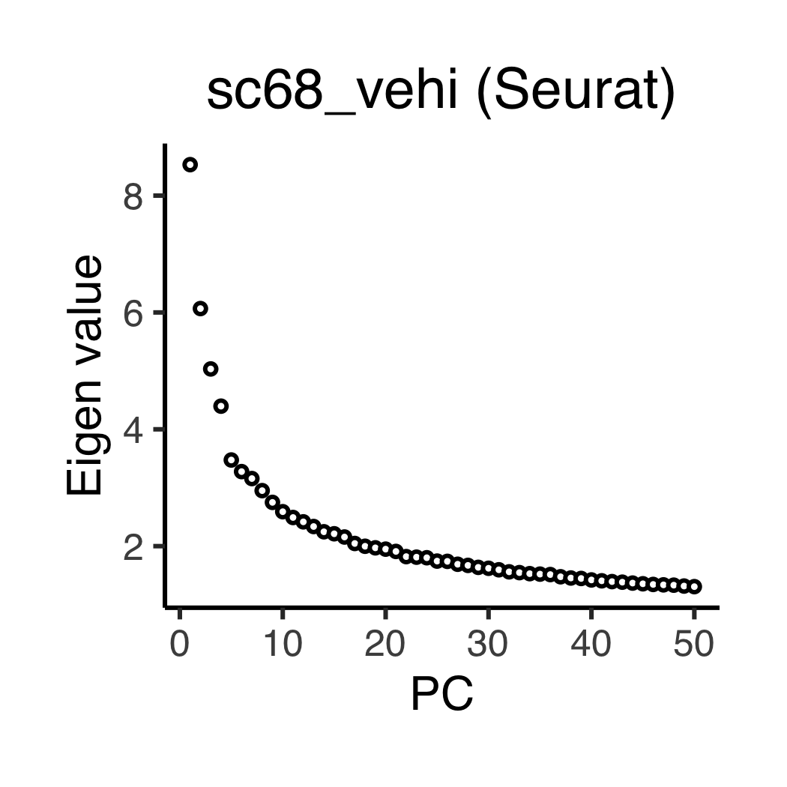 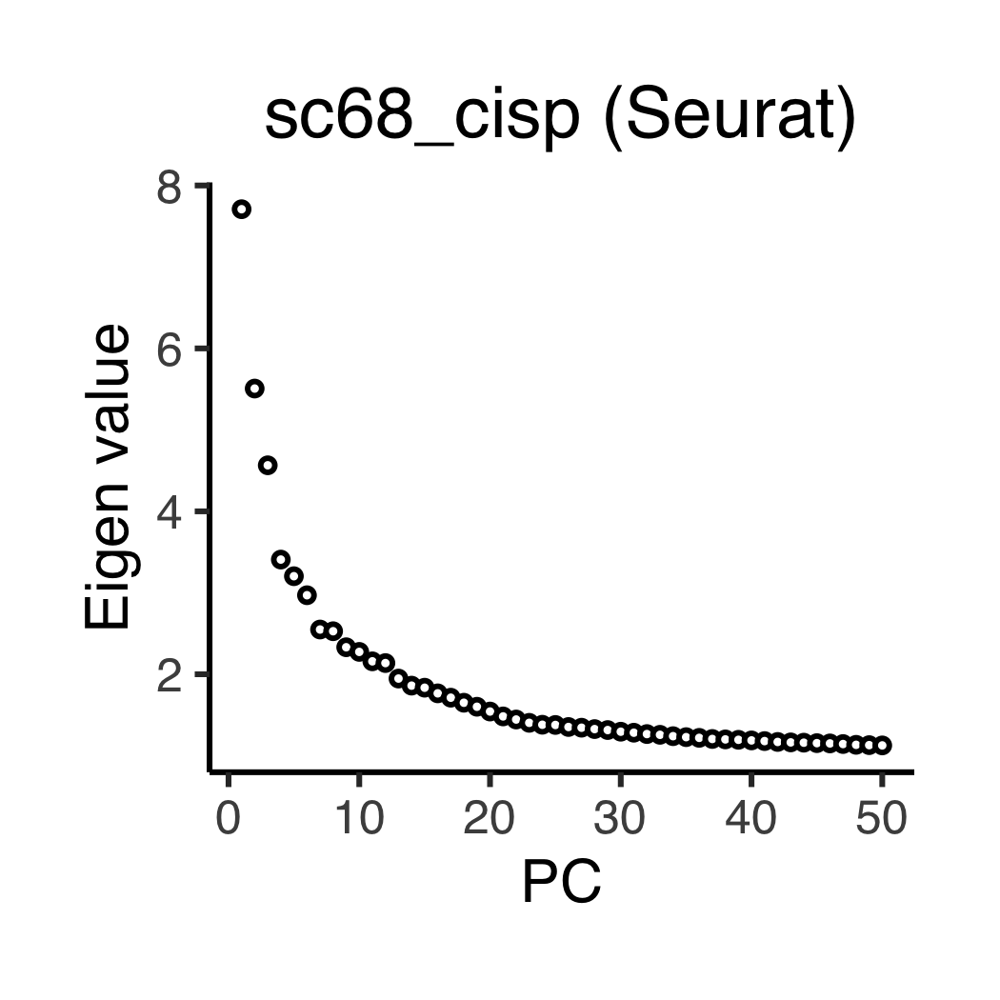
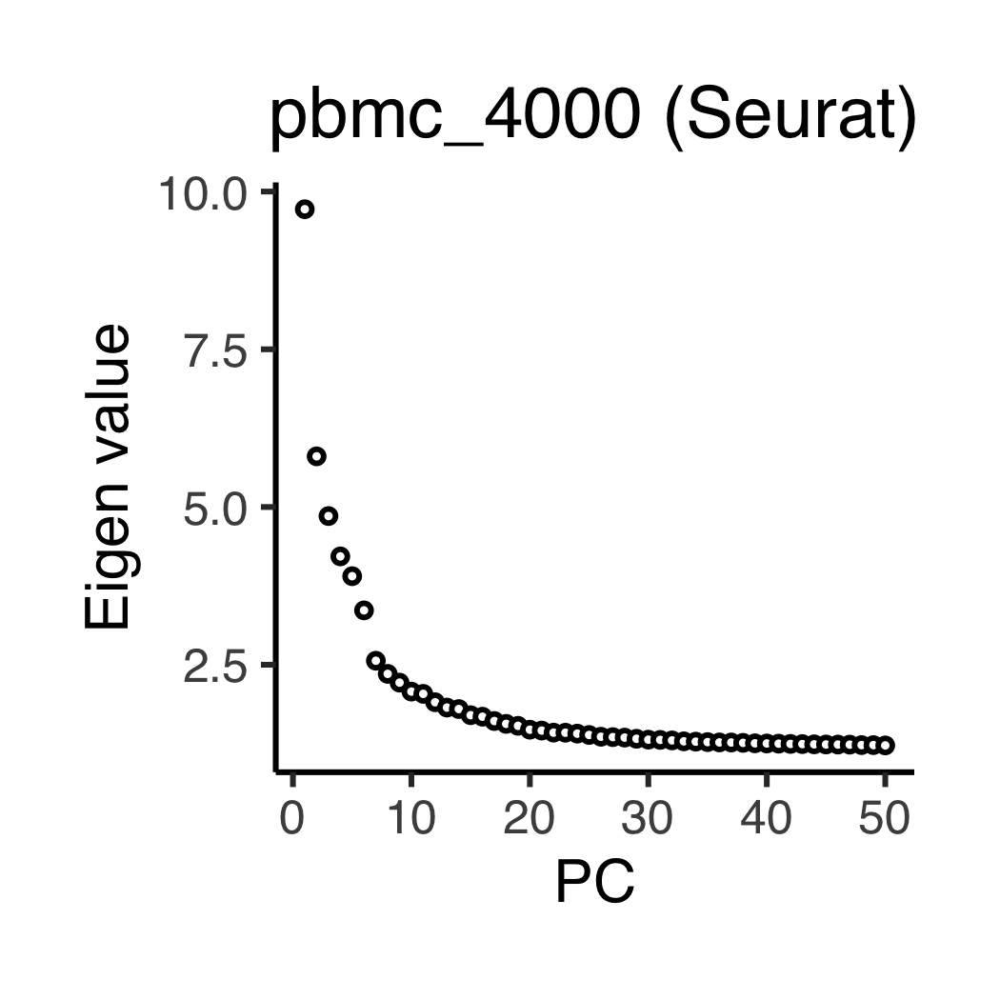 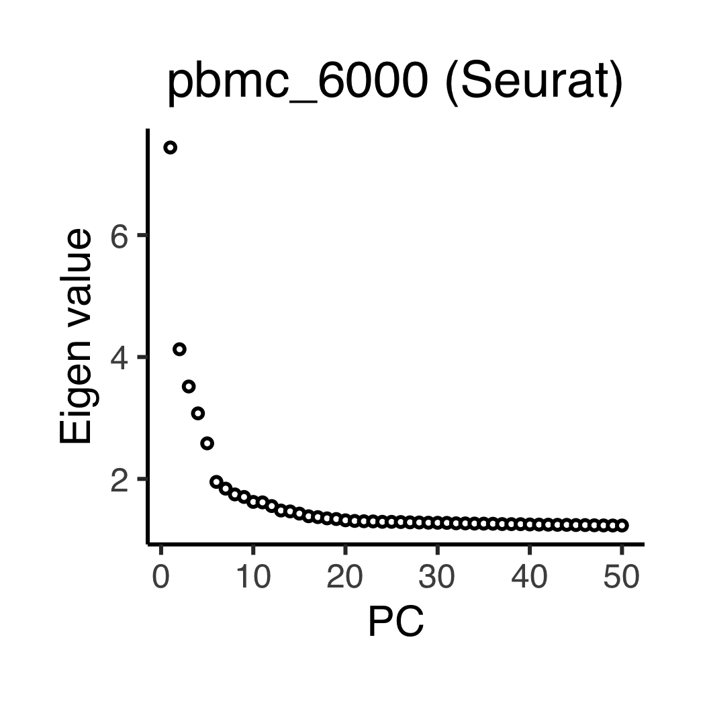
14.2 Cluster cells
Calculate the cumulative sum of variances. These results are used to determine the dimensions of the principal components. In what follows, we use the PCs whose contribution ratio is greater than or equal to 0.9 for the first time.
sc68_vehi_pc <- which(cumsum(sc68_vehi@reductions[["pca"]]@stdev) /
sum(sc68_vehi@reductions[["pca"]]@stdev) > 0.9)[1]
sc68_cisp_pc <- which(cumsum(sc68_cisp@reductions[["pca"]]@stdev) /
sum(sc68_cisp@reductions[["pca"]]@stdev) > 0.9)[1]
pbmc_4000_pc <- which(cumsum(pbmc_4000@reductions[["pca"]]@stdev) /
sum(pbmc_4000@reductions[["pca"]]@stdev) > 0.9)[1]
pbmc_6000_pc <- which(cumsum(pbmc_6000@reductions[["pca"]]@stdev) /
sum(pbmc_6000@reductions[["pca"]]@stdev) > 0.9)[1]According to Seurat’s protocol, we perform the following procedures:
- run
FindNeighbors()for creating k-nearest neighbor graph, - run
FindClusters()for clustering cells, and - run
RunTSNE()andRunUMAP()
sc68_vehi <- process_002_seurat(obj = sc68_vehi, pc = sc68_vehi_pc,
resolution = 0.1)
sc68_cisp <- process_002_seurat(obj = sc68_cisp, pc = sc68_cisp_pc,
resolution = 0.1)
pbmc_4000 <- process_002_seurat(obj = pbmc_4000, pc = pbmc_4000_pc,
resolution = 0.08)
pbmc_6000 <- process_002_seurat(obj = pbmc_6000, pc = pbmc_6000_pc,
resolution = 0.15)Change the label names by adding 1 (e.g., change from 0 to 1).
# ----------------------------------------
# sc68_vehi
# ----------------------------------------
sc68_vehi@meta.data[["seurat_clusters"]] <- as.factor(as.integer(
as.character(sc68_vehi@meta.data[["seurat_clusters"]])) + 1)
sc68_vehi <- SetIdent(sc68_vehi, value = "seurat_clusters")
# ----------------------------------------
# sc68_cisp
# ----------------------------------------
sc68_cisp@meta.data[["seurat_clusters"]] <- as.factor(as.integer(
as.character(sc68_cisp@meta.data[["seurat_clusters"]])) + 1)
sc68_cisp <- SetIdent(sc68_cisp, value = "seurat_clusters")
# ----------------------------------------
# pbmc_4000
# ----------------------------------------
pbmc_4000@meta.data[["seurat_clusters"]] <- as.factor(as.integer(
as.character(pbmc_4000@meta.data[["seurat_clusters"]])) + 1)
pbmc_4000 <- SetIdent(pbmc_4000, value = "seurat_clusters")
# ----------------------------------------
# pbmc_6000
# ----------------------------------------
pbmc_6000@meta.data[["seurat_clusters"]] <- as.factor(as.integer(
as.character(pbmc_6000@meta.data[["seurat_clusters"]])) + 1)
pbmc_6000 <- SetIdent(pbmc_6000, value = "seurat_clusters")14.3 Visualize data in low dimensional space
The following function plot_tsne_seurat() shows clustering results in a
two-dimensional t-SNE space.
# ----------------------------------------
# sc68_vehi
# ----------------------------------------
p <- plot_tsne_seurat(obj = sc68_vehi, title = "sc68_vehi (Seurat)",
title_size = 18, xlabel = "tSNE_1", ylabel = "tSNE_2",
default_color = TRUE)
filename <- "figures/figure_01_0605.png"
ggsave(file = filename, plot = p, dpi = 300, width = 4.8, height = 4.0)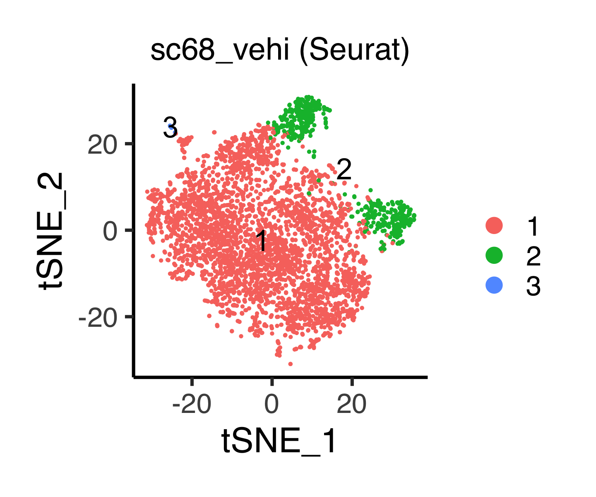 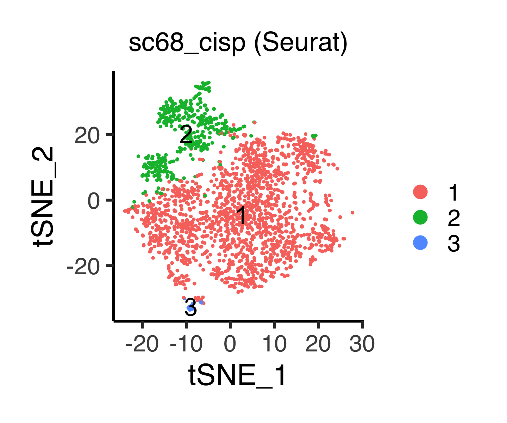


The following function plot_umap_seurat() shows clustering results in a
two-dimensional UMAP space.
# ----------------------------------------
# sc68_vehi
# ----------------------------------------
p <- plot_umap_seurat(obj = sc68_vehi, title = "sc68_vehi (Seurat)",
title_size = 18, xlabel = "UMAP_1", ylabel = "UMAP_2",
default_color = TRUE)
filename <- "figures/figure_01_0606.png"
ggsave(file = filename, plot = p, dpi = 300, width = 4.8, height = 4.0) 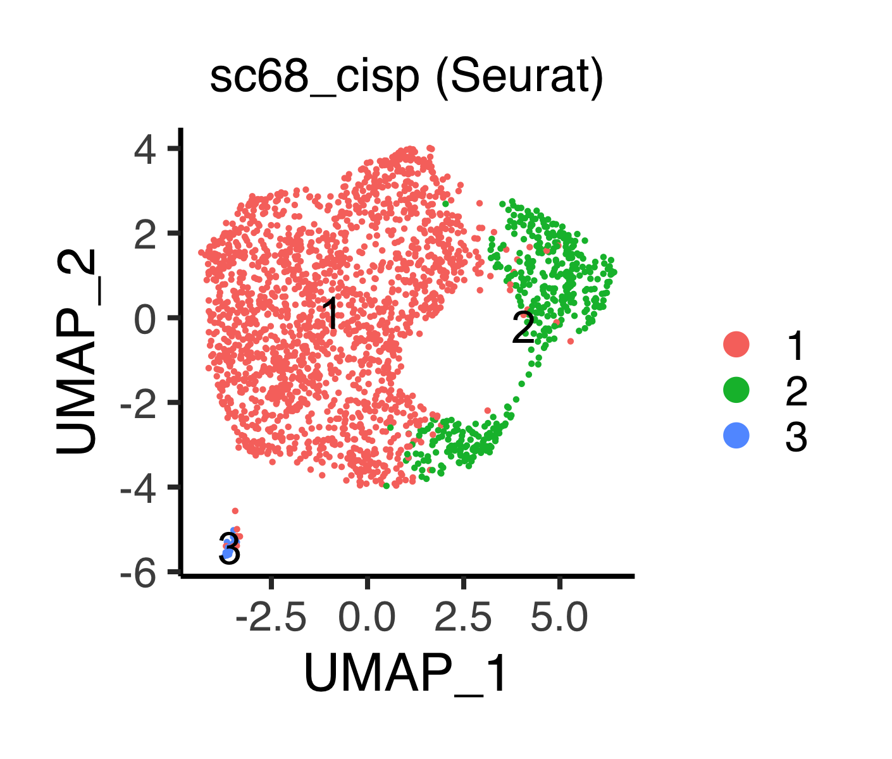
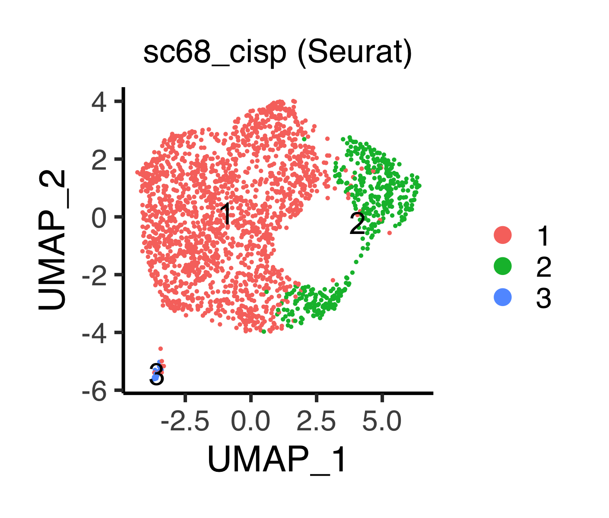
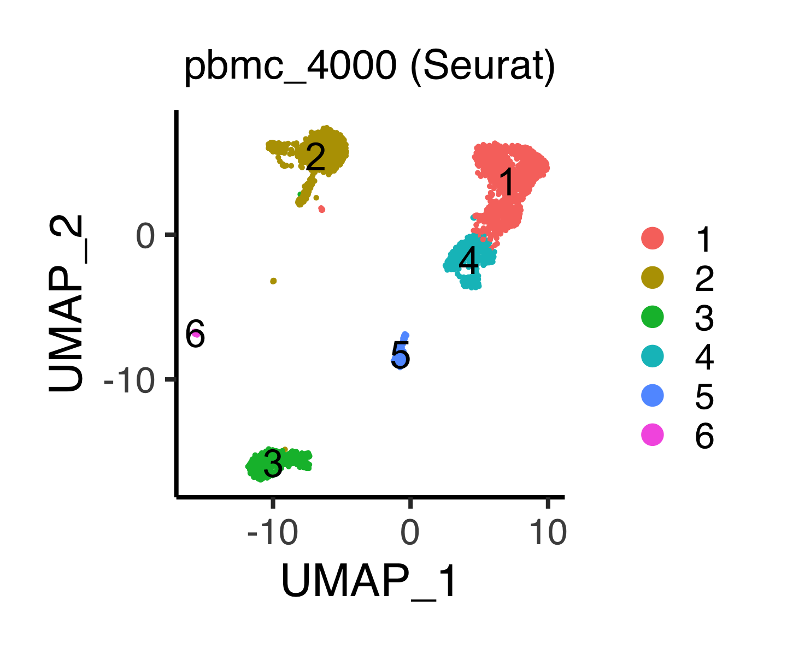

The following function do_dmap_seurat() performs DiffusionMap() using
destiny package, where the arguments are preset as sigma = "local" and
distance = "euclidean".
The arguments are obj, sigma (argument of DiffusionMap()), distance
(argument of DiffusionMap()), and pca_dim (an integer: dimension of
principal component, in which NULL is accepted if users would like to compute
diffusion map from the original gene expression matrices).
Tips:
If the resulting diffusion map is distorted by outliers, tuning of pca_dim
will be required.
sc68_vehi <- do_dmap_seurat(obj = sc68_vehi, pca_dim = sc68_vehi_pc)
sc68_cisp <- do_dmap_seurat(obj = sc68_cisp, pca_dim = sc68_cisp_pc)
pbmc_4000 <- do_dmap_seurat(obj = pbmc_4000, pca_dim = pbmc_4000_pc)
pbmc_6000 <- do_dmap_seurat(obj = pbmc_6000, pca_dim = pbmc_6000_pc)The results are stored in obj@reductions[["dmap"]].
The following function plot_dmap_seurat() shows the data in a two-dimensional
diffusion map.
# ----------------------------------------
# sc68_vehi
# ----------------------------------------
p <- plot_dmap_seurat(obj = sc68_vehi, title = "sc68_vehi (Seurat)",
title_size = 18, xlabel = "DC_1", ylabel = "DC_2",
default_color = TRUE)
filename <- "figures/figure_01_0607.png"
ggsave(file = filename, plot = p, dpi = 300, width = 5.0, height = 4.0)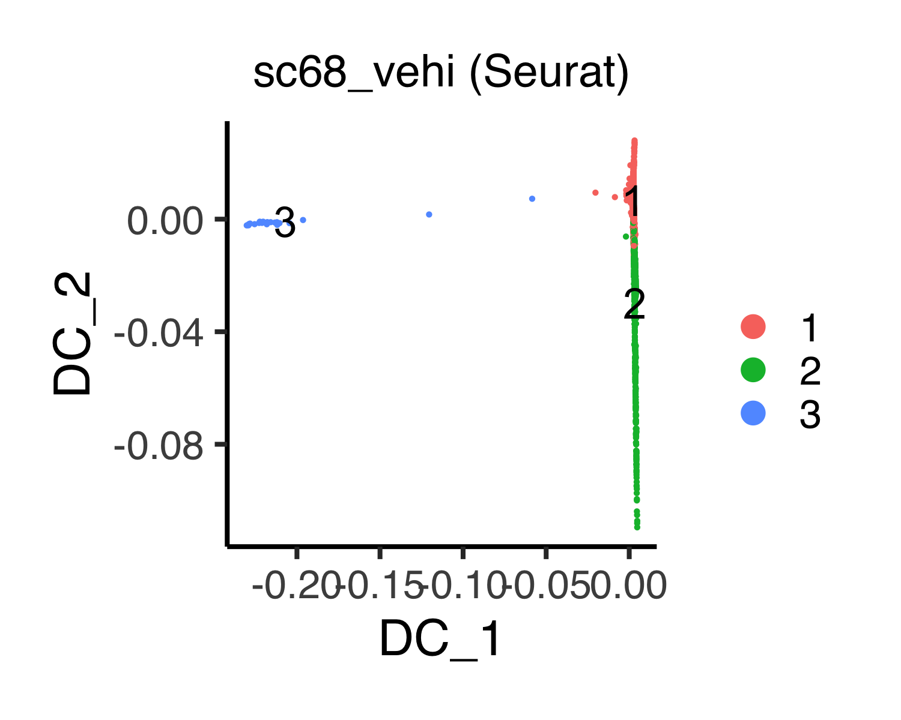 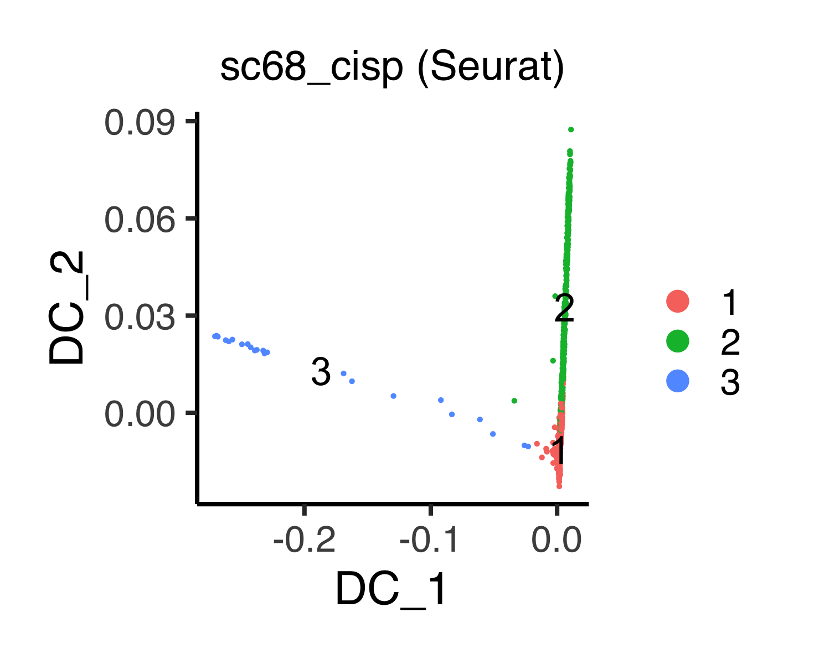
 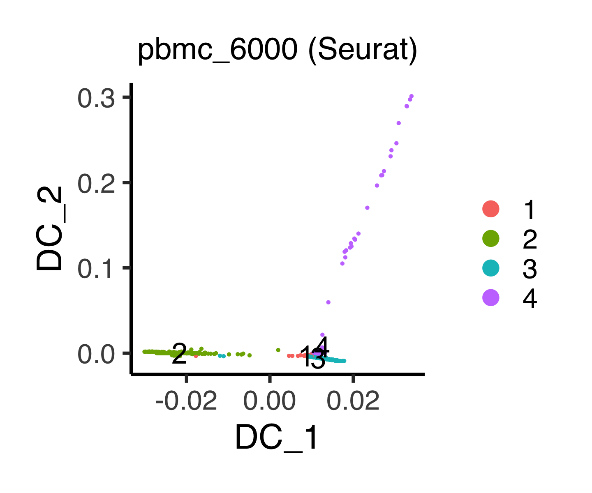
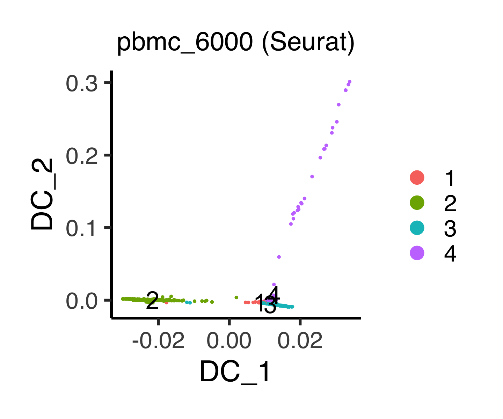
14.4 Cell cycle scoring
Assign each cell a cell cycle score using CellCycleScoring().
Note that the entries of obj@active.ident will be replaced with
obj@meta.data[["Phase"]].
s.genes <- cc.genes$s.genes
g2m.genes <- cc.genes$g2m.genes
sc68_vehi <- CellCycleScoring(sc68_vehi, s.features = s.genes,
g2m.features = g2m.genes, set.ident = TRUE)
sc68_cisp <- CellCycleScoring(sc68_cisp, s.features = s.genes,
g2m.features = g2m.genes, set.ident = TRUE)
pbmc_4000 <- CellCycleScoring(pbmc_4000, s.features = s.genes,
g2m.features = g2m.genes, set.ident = TRUE)
pbmc_6000 <- CellCycleScoring(pbmc_6000, s.features = s.genes,
g2m.features = g2m.genes, set.ident = TRUE)
sc68_vehi@meta.data[["Phase"]] <- sc68_vehi@active.ident
sc68_cisp@meta.data[["Phase"]] <- sc68_cisp@active.ident
pbmc_4000@meta.data[["Phase"]] <- pbmc_4000@active.ident
pbmc_6000@meta.data[["Phase"]] <- pbmc_6000@active.identThe following function plot_cc_umap_seurat() shows cell cycle phases in
a two-dimensional UMAP space.
# ----------------------------------------
# sc68_vehi
# ----------------------------------------
p <- plot_cc_umap_seurat(obj = sc68_vehi, title = "sc68_vehi (Seurat)",
title_size = 18, xlabel = "UMAP_1", ylabel = "UMAP_2",
default_color = FALSE)
filename <- "figures/figure_01_0608.png"
ggsave(file = filename, plot = p, dpi = 300, width = 5.2, height = 4.0) 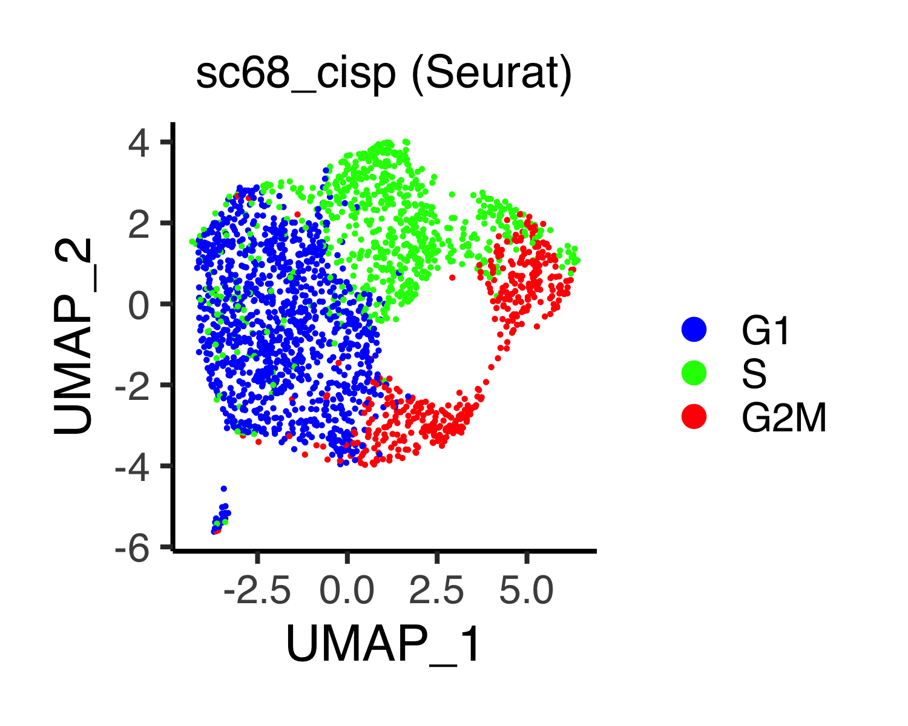
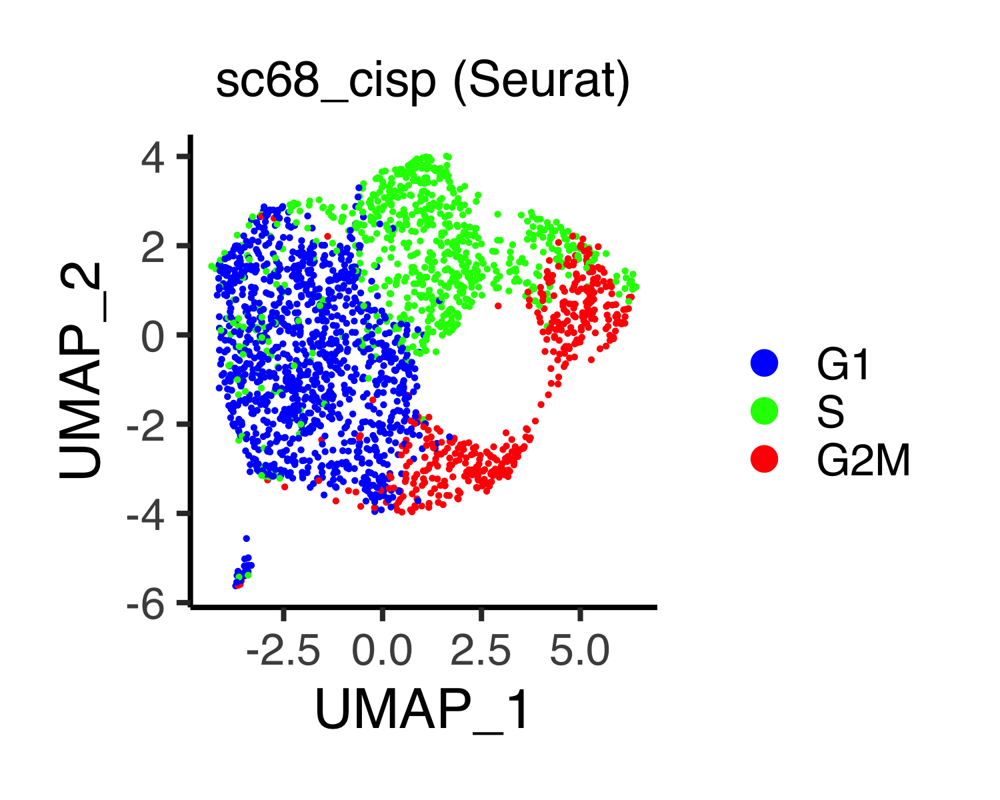
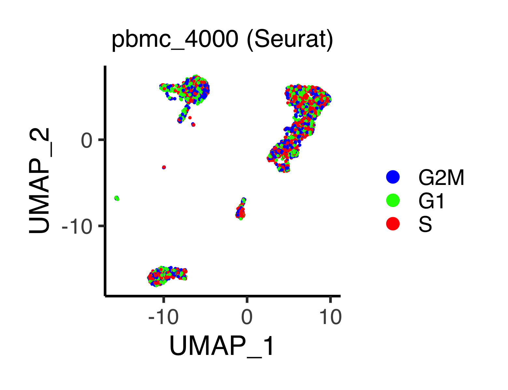

The following function plot_ccscore_umap_seurat() shows S to G2M scores,
i.e., standardized scores of mean expression levels of phase marker genes,
in a two-dimensional UMAP space.
# ----------------------------------------
# sc68_vehi
# ----------------------------------------
p <- plot_ccscore_umap_seurat(obj = sc68_vehi, title = "sc68_vehi (Seurat)",
title_size = 18, xlabel = "UMAP_1",
ylabel = "UMAP_2")
filename <- "figures/figure_01_0609.png"
ggsave(file = filename, plot = p, dpi = 300, width = 5.1, height = 4.0)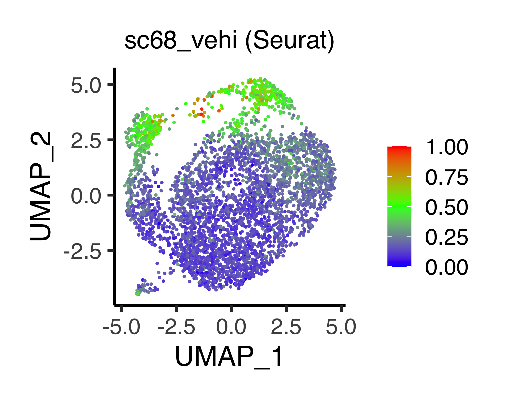 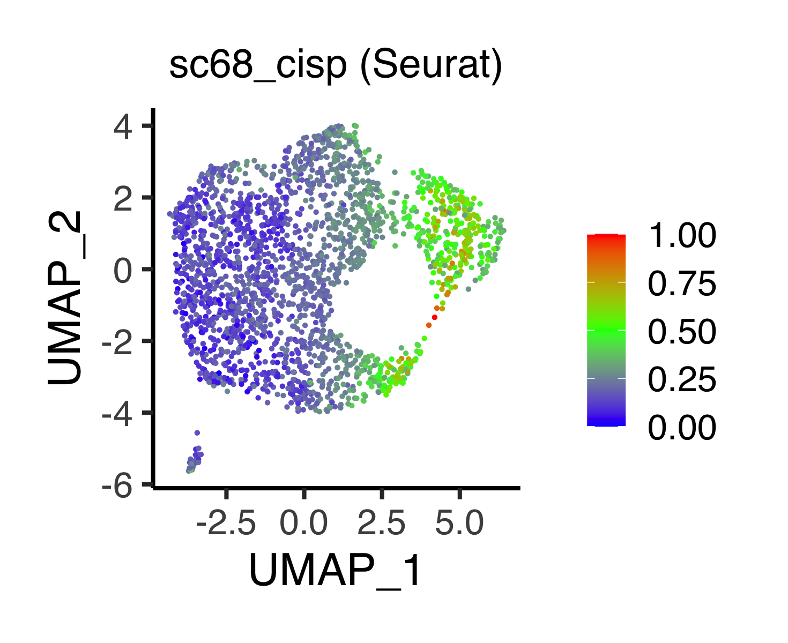
Reset obj@active.ident into obj@meta.data[["seurat_clusters"]].
sc68_vehi <- SetIdent(sc68_vehi, value = "seurat_clusters")
sc68_cisp <- SetIdent(sc68_cisp, value = "seurat_clusters")
pbmc_4000 <- SetIdent(pbmc_4000, value = "seurat_clusters")
pbmc_6000 <- SetIdent(pbmc_6000, value = "seurat_clusters")14.5 Find differentially expressed genes
Find differentially expressed genes using Seurat’s function and stores the
results into obj@misc[["markers"]].
sc68_vehi@misc[["markers"]] <- FindAllMarkers(
sc68_vehi, only.pos = T, min.pct = 0.25, logfc.threshold = 0.25)
sc68_cisp@misc[["markers"]] <- FindAllMarkers(
sc68_cisp, only.pos = T, min.pct = 0.25, logfc.threshold = 0.25)
pbmc_4000@misc[["markers"]] <- FindAllMarkers(
pbmc_4000, only.pos = T, min.pct = 0.25, logfc.threshold = 0.25)
pbmc_6000@misc[["markers"]] <- FindAllMarkers(
pbmc_6000, only.pos = T, min.pct = 0.25, logfc.threshold = 0.25)Users can check the marker genes of each cluster by the following command:
datatable(sc68_vehi@misc[["markers"]], rownames = FALSE)
datatable(sc68_cisp@misc[["markers"]], rownames = FALSE)
datatable(pbmc_4000@misc[["markers"]], rownames = FALSE)
datatable(pbmc_6000@misc[["markers"]], rownames = FALSE)sc68_vehi
sc68_cisp
pbmc_4000
pbmc_6000
14.6 Enrichment analysis
The following function do_enrichGO_seurat() performs clusterProfiler
functions as follows:
enrichGO()for all Gene Ontology categories (MF, BP, CC, and ALL),simplify()to remove redundant GO terms (but only for MF, BP, and CC), and
The arguments are obj (Seurat object), padj_cutoff (cutoff value of the
input data obj@misc[["markers"]][["p_val_adj"]]), qval_cutoff_enrichGO
(i.e., qvalueCutoff, an argument of enrichGO()), orgdb
(annotation data package such as org.Hs.eg.db and org.Mm.eg.db), and
cutoff (an argument of simplify(), ranging from 0 to 1).
The other arguments are set as pAdjustMethod = "BH", by = "p.adjust",
select_fun = min, measure = "Wang", and semData = NULL.
sc68_vehi <- do_enrichGO_seurat(obj = sc68_vehi, padj_cutoff = 0.01,
qval_cutoff_enrichGO = 0.05,
orgdb = org.Hs.eg.db, cutoff = 0.7,
ont = "BP")
sc68_cisp <- do_enrichGO_seurat(obj = sc68_cisp, padj_cutoff = 0.01,
qval_cutoff_enrichGO = 0.05,
orgdb = org.Hs.eg.db, cutoff = 0.7,
ont = "BP")
pbmc_4000 <- do_enrichGO_seurat(obj = pbmc_4000, padj_cutoff = 0.01,
qval_cutoff_enrichGO = 0.05,
orgdb = org.Hs.eg.db, cutoff = 0.7,
ont = "BP")
pbmc_6000 <- do_enrichGO_seurat(obj = pbmc_6000, padj_cutoff = 0.01,
qval_cutoff_enrichGO = 0.05,
orgdb = org.Hs.eg.db, cutoff = 0.7,
ont = "BP")The results are stored in obj@misc[["enrichGO"]] and
obj@misc[["enrichGO_simplified"]].
The following function prepare_glist() prepares a list of genes, which is
used for an input of compareCluster().
Note that we use org.Hs.eg.db for using human genome annotation package.
#--------------------------------------------------
# Preparing
#--------------------------------------------------
prepare_glist <- function(obj, padj_cutoff){
n_groups <- length(unique(sort(obj@active.ident)))
tmp <- obj@misc[["markers"]]
cluster_names <- as.character(unique(tmp$cluster))
g <- list() ; glist <- list() ; label_names <- c()
for(i in 1:n_groups){
df <- tmp[which(tmp$cluster == i),]
g[[i]] <- df[which(df$p_val_adj <= padj_cutoff),]$gene
geneID <- bitr(g[[i]], fromType = "SYMBOL", toType = "ENTREZID",
OrgDb = org.Hs.eg.db)$ENTREZID
glist[[i]] <- geneID
label_names <- c(label_names, paste("Group_", i, sep = ""))
}
names(glist) <- label_names
return(glist)
}
glist_sc68_vehi <- prepare_glist(obj = sc68_vehi, padj_cutoff = 0.01)
glist_sc68_cisp <- prepare_glist(obj = sc68_cisp, padj_cutoff = 0.01)
glist_pbmc_4000 <- prepare_glist(obj = pbmc_4000, padj_cutoff = 0.01)
glist_pbmc_6000 <- prepare_glist(obj = pbmc_6000, padj_cutoff = 0.01)Performs compareCluster(), which easily compares enriched biological terms
across clusters (but without simplify()).
#--------------------------------------------------
# sc68_vehi
#--------------------------------------------------
sc68_vehi@misc[["compareCluster_GO"]] <- compareCluster(
glist_sc68_vehi, fun = "enrichGO", OrgDb = org.Hs.eg.db, ont = "BP",
pAdjustMethod = "BH", pvalueCutoff = 0.01, qvalueCutoff = 0.05)
sc68_vehi@misc[["compareCluster_KEGG"]] <- compareCluster(
glist_sc68_vehi, fun = "enrichKEGG", organism = "hsa", keyType = "kegg",
pAdjustMethod = "BH", pvalueCutoff = 0.01, qvalueCutoff = 0.05,
minGSSize = 10, maxGSSize = 500) # min/max size of genes annotated for testing
#--------------------------------------------------
# sc68_cisp
#--------------------------------------------------
sc68_cisp@misc[["compareCluster_GO"]] <- compareCluster(
glist_sc68_cisp, fun = "enrichGO", OrgDb = org.Hs.eg.db, ont = "BP",
pAdjustMethod = "BH", pvalueCutoff = 0.01, qvalueCutoff = 0.05)
sc68_cisp@misc[["compareCluster_KEGG"]] <- compareCluster(
glist_sc68_cisp, fun = "enrichKEGG", organism = "hsa", keyType = "kegg",
pAdjustMethod = "BH", pvalueCutoff = 0.01, qvalueCutoff = 0.05,
minGSSize = 10, maxGSSize = 500) # min/max size of genes annotated for testing
#--------------------------------------------------
# pbmc_4000
#--------------------------------------------------
pbmc_4000@misc[["compareCluster_GO"]] <- compareCluster(
glist_pbmc_4000, fun = "enrichGO", OrgDb = org.Hs.eg.db, ont = "BP",
pAdjustMethod = "BH", pvalueCutoff = 0.01, qvalueCutoff = 0.05)
pbmc_4000@misc[["compareCluster_KEGG"]] <- compareCluster(
glist_pbmc_4000, fun = "enrichKEGG", organism = "hsa", keyType = "kegg",
pAdjustMethod = "BH", pvalueCutoff = 0.01, qvalueCutoff = 0.05,
minGSSize = 10, maxGSSize = 500) # min/max size of genes annotated for testing
#--------------------------------------------------
# pbmc_6000
#--------------------------------------------------
pbmc_6000@misc[["compareCluster_GO"]] <- compareCluster(
glist_pbmc_6000, fun = "enrichGO", OrgDb = org.Hs.eg.db, ont = "BP",
pAdjustMethod = "BH", pvalueCutoff = 0.01, qvalueCutoff = 0.05)
pbmc_6000@misc[["compareCluster_KEGG"]] <- compareCluster(
glist_pbmc_6000, fun = "enrichKEGG", organism = "hsa", keyType = "kegg",
pAdjustMethod = "BH", pvalueCutoff = 0.01, qvalueCutoff = 0.05,
minGSSize = 10, maxGSSize = 500) # min/max size of genes annotated for testingPlot the results of compareCluster().
#--------------------------------------------------
# sc68_vehi
#--------------------------------------------------
p <- dotplot(sc68_cisp@misc[["compareCluster_GO"]], showCategory = 5)
filename <- "figures/figure_01_0610.png"
ggsave(file = filename, plot = p, dpi = 300, width = 10, height = 5)
p <- dotplot(sc68_cisp@misc[["compareCluster_KEGG"]], showCategory = 8)
filename <- "figures/figure_01_0611.png"
ggsave(file = filename, plot = p, dpi = 300, width = 7, height = 5)sc68_vehi


sc68_cisp
 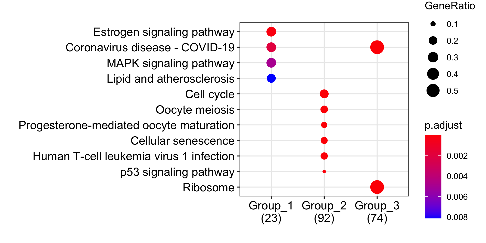
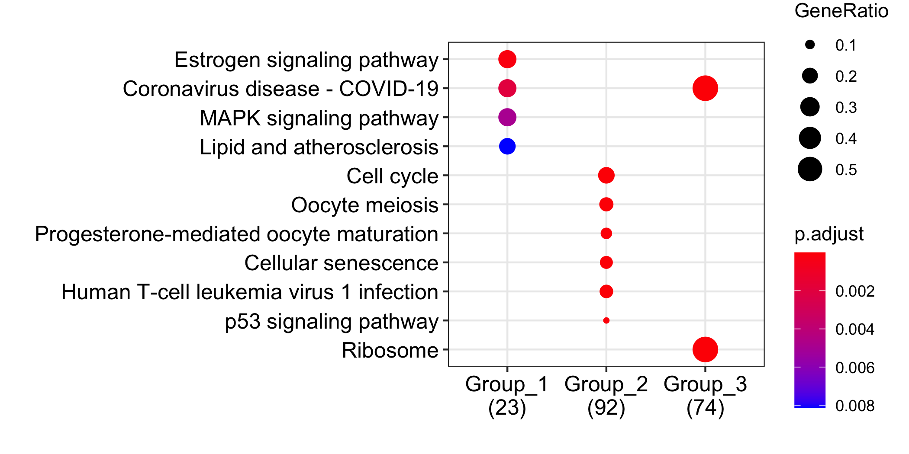
pbmc_4000
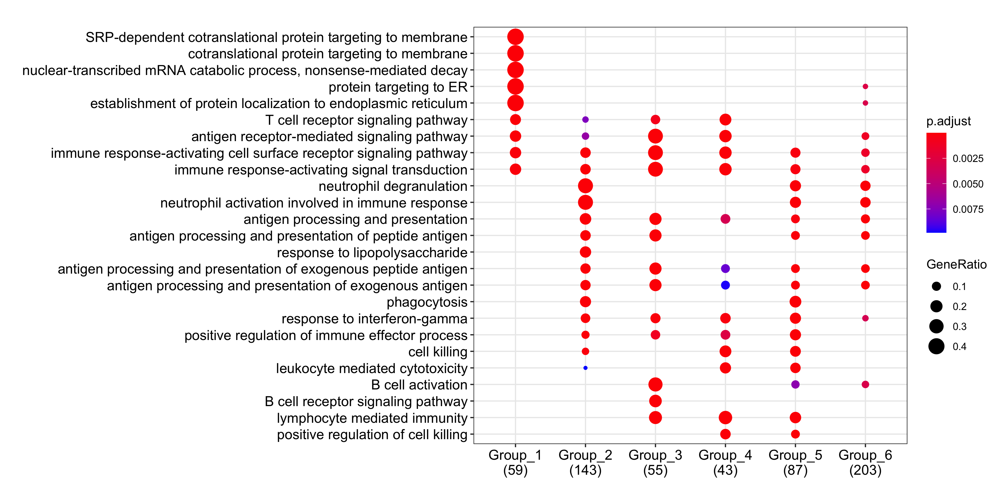 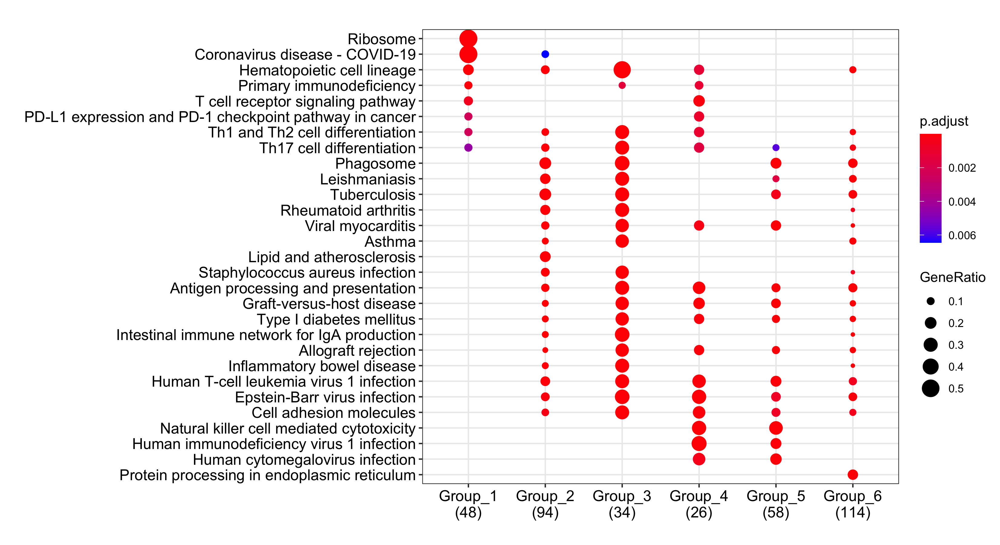
pbmc_6000


14.7 Save results
Save the objects.
saveRDS(sc68_vehi, file = "backup/01_600_sc68_vehi_seurat.rds")
saveRDS(sc68_cisp, file = "backup/02_600_sc68_cisp_seurat.rds")
saveRDS(pbmc_4000, file = "backup/10_600_pbmc_4000_seurat.rds")
saveRDS(pbmc_6000, file = "backup/11_600_pbmc_6000_seurat.rds")One can load the results.
sc68_vehi <- readRDS(file = "backup/01_600_sc68_vehi_seurat.rds")
sc68_cisp <- readRDS(file = "backup/02_600_sc68_cisp_seurat.rds")
pbmc_4000 <- readRDS(file = "backup/10_600_pbmc_4000_seurat.rds")
pbmc_6000 <- readRDS(file = "backup/11_600_pbmc_6000_seurat.rds")14.8 Infer cell types for PBMC datasets
Load the data.
rm(list=ls())
source("R/function_seurat.R")
pbmc_4000 <- readRDS(file = "backup/10_600_pbmc_4000_seurat.rds")
pbmc_6000 <- readRDS(file = "backup/11_600_pbmc_6000_seurat.rds")Based on the result of FindAllMarkers(), we manually investigate marker genes
using GeneCards as follows:
pbmc_4000
1: T cell # TRAC (FDR ~ 0), CD3D (FDR ~ e-251), IL32 (FDR ~ e-131)
2: Monocyte # S100A8 (FDR ~ 0), LYZ (FDR ~ 0), CD14 (FDR ~ e-119)
3: B cell # CD79A (FDR ~ e-301), MS4A1 (FDR ~ e-276), IGHM (FDR ~ e-234)
4: NK/NKT cell # CD3D (FDR ~ e-211), NKG7 (FDR ~ e-211 ), GZMA (FDR ~ e-198)
5: NK/NKT cell # KLRF1 (FDR ~ 0), GZMB (FDR ~ e-264), CD160 (FDR ~ e-159)
6: Unspecified # TCF4, MZB1, PTCRA, JCHAIN, MZB1, GZMB, ..pbmc_6000
1: T cell # CD3D (FDR ~ 0), TCF7 (FDR ~ 0), CD27 (FDR ~ e-225)
2: Monocyte # S100A8 (FDR ~ 0), LYZ (FDR ~ 0), CD14 (FDR ~ 0)
3: NK/NKT cell # NKG7 (FDR ~ 0), GZMA (FDR ~ 0), FGFBP2 (FDR ~ 0)
4: B cell # CD79A (FDR ~ 0), VPREB3 (FDR ~ 0), BANK1 (FDR ~ 0)Since our manual annotations are more comparable with those of previous research (Cao et al., Front Genet, 2020), we identify the cell types as follows:
# ----------------------------------------
# pbmc_4000
# ----------------------------------------
tmp <- as.integer(as.character(pbmc_4000@meta.data[["seurat_clusters"]]))
tmp[tmp == 1] <- "T cell"
tmp[tmp == 2] <- "Monocyte"
tmp[tmp == 3] <- "B cell"
tmp[tmp == 4] <- "NK or NKT cell"
tmp[tmp == 5] <- "NK or NKT cell"
tmp[tmp == 6] <- "Unspecified"
tmp <- factor(tmp, levels = c("T cell", "Monocyte", "B cell", "NK or NKT cell",
"Unspecified"))
pbmc_4000@meta.data[["mylabel"]] <- tmp
# ----------------------------------------
# For `pbmc_6000`
# ----------------------------------------
tmp <- as.integer(as.character(pbmc_6000@meta.data[["seurat_clusters"]]))
tmp[tmp == 1] <- "T cell"
tmp[tmp == 2] <- "Monocyte"
tmp[tmp == 3] <- "NK or NKT cell"
tmp[tmp == 4] <- "B cell"
tmp <- factor(tmp, levels = c("T cell", "Monocyte", "B cell", "NK or NKT cell"))
pbmc_6000@meta.data[["mylabel"]] <- tmpThe numbers of cells are stored in a table.
identify_cell <- function(obj){
tmp <- obj@meta.data[["mylabel"]]
cells <- levels(tmp)
df <- c()
for(cell in cells){
df <- rbind(df, c(cell, length(tmp[tmp==cell])))
}
df <- as.data.frame(df)
colnames(df) <- c("cell_type", "n")
return(df)
}
pbmc_4000@misc[["population"]] <- identify_cell(obj = pbmc_4000)
pbmc_6000@misc[["population"]] <- identify_cell(obj = pbmc_6000)Save the objects.
saveRDS(pbmc_4000, file = "backup/10_601_pbmc_4000_seurat.rds")
saveRDS(pbmc_6000, file = "backup/11_601_pbmc_6000_seurat.rds")14.9 Infer cell types for PBMC datasets by Seurat and scCATCH
Load the data.
rm(list=ls())
source("R/function_seurat.R")
pbmc_4000 <- readRDS(file = "backup/10_600_pbmc_4000_seurat.rds")
pbmc_6000 <- readRDS(file = "backup/11_600_pbmc_6000_seurat.rds")To make sure our manual annotations, we perform findmarkergenes() and
scCATCH() using scCATCH package.
# ----------------------------------------
# pbmc_4000
# ----------------------------------------
pbmc_4000_clu_markers <- findmarkergenes(object = pbmc_4000,
species = "Human",
cluster = 'All',
match_CellMatch = FALSE,
cancer = NULL,
tissue = NULL,
cell_min_pct = 0.25,
logfc = 0.25,
pvalue = 0.05)
pbmc_4000_clu_ann <- scCATCH(object = pbmc_4000_clu_markers$clu_markers,
species = "Human", cancer = NULL,
tissue = "Peripheral blood")
pbmc_4000@misc[["scCATCH"]][["clu_markers"]] <- pbmc_4000_clu_markers
pbmc_4000@misc[["scCATCH"]][["clu_ann"]] <- pbmc_4000_clu_ann
# ----------------------------------------
# pbmc_6000
# ----------------------------------------
pbmc_6000_clu_markers <- findmarkergenes(object = pbmc_6000,
species = "Human",
cluster = 'All',
match_CellMatch = FALSE,
cancer = NULL,
tissue = NULL,
cell_min_pct = 0.25,
logfc = 0.25,
pvalue = 0.05)
pbmc_6000_clu_ann <- scCATCH(object = pbmc_6000_clu_markers$clu_markers,
species = "Human", cancer = NULL,
tissue = "Peripheral blood")
pbmc_6000@misc[["scCATCH"]][["clu_markers"]] <- pbmc_6000_clu_markers
pbmc_6000@misc[["scCATCH"]][["clu_ann"]] <- pbmc_6000_clu_annNote that the results of scCATCH() are different from
those of manual annotations.
Based on the result of scCATCH(), we annotated the cell type labels
as follows:
pbmc_4000
1: Unspecified
2: Monocyte
3: B cell
4: T cell
5: Unspecified
6: T cellpbmc_6000
1: T cell
2: Monocyte
3: T cell
4: B cellSince our manual annotations are more comparable with those of previous research (Cao et al., Front Genet, 2020), we identify the cell types as follows:
# ----------------------------------------
# pbmc_4000
# ----------------------------------------
tmp <- as.integer(as.character(pbmc_4000@meta.data[["seurat_clusters"]]))
tmp[tmp == 1] <- "Unspecified"
tmp[tmp == 2] <- "Monocyte"
tmp[tmp == 3] <- "B cell"
tmp[tmp == 4] <- "T cell"
tmp[tmp == 5] <- "Unspecified"
tmp[tmp == 6] <- "T cell"
tmp <- factor(tmp, levels = c("T cell", "Monocyte", "B cell", "NK or NKT cell",
"Unspecified"))
pbmc_4000@meta.data[["mylabel"]] <- tmp
# ----------------------------------------
# For `pbmc_6000`
# ----------------------------------------
tmp <- as.integer(as.character(pbmc_6000@meta.data[["seurat_clusters"]]))
tmp[tmp == 1] <- "T cell"
tmp[tmp == 2] <- "Monocyte"
tmp[tmp == 3] <- "NK or NKT cell"
tmp[tmp == 4] <- "B cell"
tmp <- factor(tmp, levels = c("T cell", "Monocyte", "B cell", "NK or NKT cell"))
pbmc_6000@meta.data[["mylabel"]] <- tmpThe numbers of cells are stored in a table.
identify_cell <- function(obj){
tmp <- obj@meta.data[["mylabel"]]
cells <- levels(tmp)
df <- c()
for(cell in cells){
df <- rbind(df, c(cell, length(tmp[tmp==cell])))
}
df <- as.data.frame(df)
colnames(df) <- c("cell_type", "n")
return(df)
}
pbmc_4000@misc[["population"]] <- identify_cell(obj = pbmc_4000)
pbmc_6000@misc[["population"]] <- identify_cell(obj = pbmc_6000)Save the objects.
saveRDS(pbmc_4000, file = "backup/10_602_pbmc_4000_seurat_sccatch.rds")
saveRDS(pbmc_6000, file = "backup/11_602_pbmc_6000_seurat_sccatch.rds")